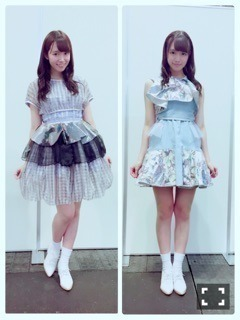
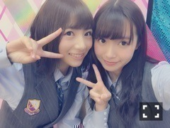

| 2016/06 20 Mon | ひめたん-0o0-その467 |
土曜日は京都で
アルバム個別握手会でした！
来てくださった皆さん
ありがとうございました(´,,•ω•,,｀)
お留守番チームの皆さんにご報告～
1部 君は僕と会わない方がよかったのかな

2部 命は美しい
3部 別れ際、もっと好きになる

4部 太陽ノック
5部 太陽ノック(MV ver.)

写メは5部。
歌唱衣装での握手会というのは
やはり新鮮で楽しいね(・∀・)ノ
たくさんのエールを受けて
やっと実感が湧いたというか、
改めて頑張らなきゃって思いました。
構えすぎず、ありのままで、
でもやる時はやる。
そんなスタンスで
15枚目駆け抜けようと思います
中元、頑張ります！
次は来週、幕張メッセですね
また違う衣装を着る予定。
楽しみにしてます♡
17日発売のAKB新聞に
北野・中元で載せていただいてます。
選抜発表後、
これが初のインタビューだったような。
是非チェックしてみてください( ˇωˇ )
織姫！

日曜の夜は、らじらー！サンデー
前回のゲストは声優アーツに渡部優衣さん、
乃木坂から能條愛未ちゃん、
和田まあやちゃん、伊藤かりんちゃんでした。
ちゃんと聞いてましたよ～！
いつもと違う雰囲気で楽しかったo(^o^)o
なんか不思議な感じがしました。
3人とも、またひめがいる時にも
遊びに来てね♡
次回、7月1週目は中元復帰します！
乃木坂から秋元真夏ちゃんも
来てくれますよ～！
15thシングル制作も順調です♪
楽しみにしててくださいね。
今夜はNOGIBINGO!6
妹コンテストリターンズだよ～
是非観てね。おやすみなさい！
(＊´・ω・＊)
コメント(549)
2016/06/20 23:42